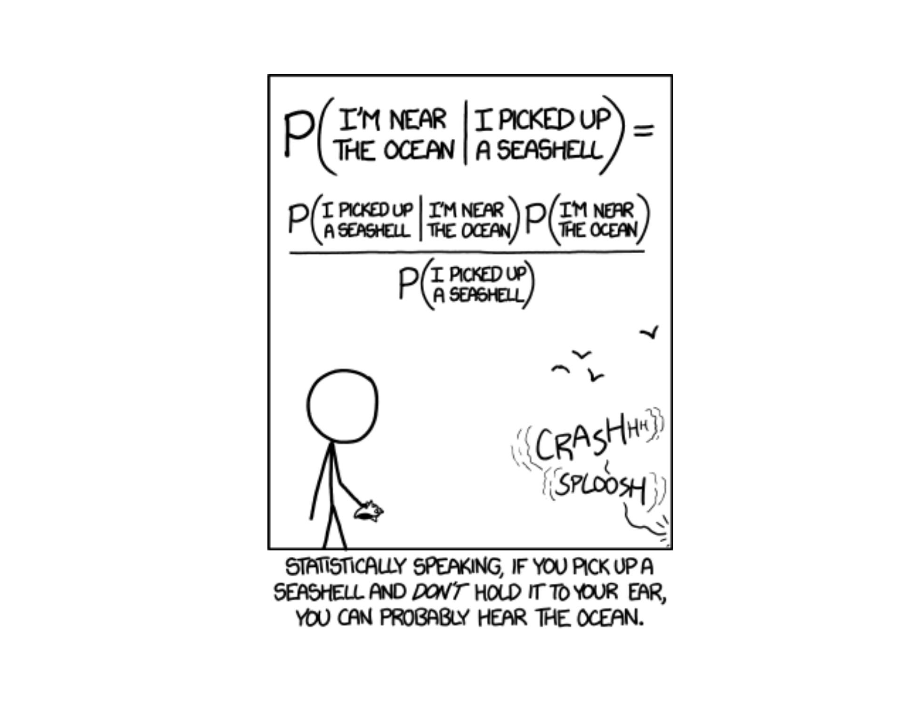
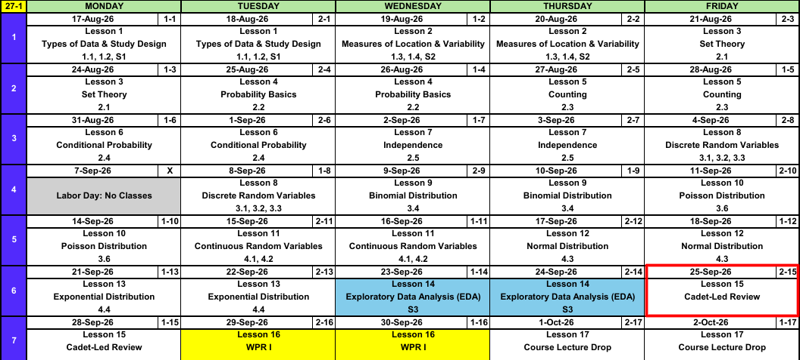

Lesson 15: Cadet-Led Review
Calendar

WPR I Admin
ImportantWPR I: Lesson 16 (29, 30 Sep)
- Covers: Lessons 1 through 13
- Time: 55 minutes
- Authorized: the course statistics reference card (SRC), R-Lite, and the issued calculator
R-Lite and the SRC
Study Materials
- WPR I Review and Solutions
- Last semester, for more practice: WPR I Review (AY26-2) and Solutions
What We Did: Block I Outline
Descriptive Statistics
Lesson 1: Types of Data & Study Design (Devore 1.1, 1.2, S1)
- Population, sample, and process
- Descriptive vs inferential statistics
- Parameter (\(\mu\), \(\sigma\), \(p\)) vs statistic (\(\bar{x}\), \(s\), \(\hat{p}\))
- Categorical (nominal, ordinal) vs numerical (discrete, continuous)
- Histograms and shape: symmetric, skewed left, skewed right (named for the tail)
- Simple random sample
- Observational study vs experiment
- Random sampling buys generalization, random assignment buys causation
Lesson 2: Measures of Location & Variability (Devore 1.3, 1.4, S2)
- Center: mean \(\bar{x}\), median \(\tilde{x}\), trimmed mean
- Mean is sensitive to outliers, median is resistant
- Spread: range, sample variance \(s^2 = \dfrac{\sum (x_i - \bar{x})^2}{n - 1}\), standard deviation \(s\)
- Fourth spread \(f_s\) = upper fourth minus lower fourth
- Outlier: more than \(1.5 f_s\) beyond the nearest fourth, extreme beyond \(3 f_s\)
- Boxplots and comparative boxplots
Probability
Lesson 3: Set Theory (Devore 2.1)
- Experiment, sample space \(\mathcal{S}\), event (a subset of \(\mathcal{S}\))
- Union \(A \cup B\) (“or”), intersection \(A \cap B\) (“and”), complement \(A'\) (“not”)
- Mutually exclusive (disjoint): \(A \cap B = \emptyset\)
- Venn diagrams
- DeMorgan’s laws: \((A \cup B)' = A' \cap B'\) and \((A \cap B)' = A' \cup B'\)
Lesson 4: Probability Basics (Devore 2.2)
- Axioms: \(P(A) \ge 0\), \(P(\mathcal{S}) = 1\), and disjoint probabilities add
- Complement rule: \(P(A') = 1 - P(A)\)
- Addition rule: \(P(A \cup B) = P(A) + P(B) - P(A \cap B)\), and its three event version
- Equally likely outcomes: \(P(A) = N(A)/N\)
- Two way tables
Lesson 5: Counting (Devore 2.3)
- Product rule: \(n_1 n_2 \cdots n_k\)
- Permutation (order matters): \(P_{k,n} = \dfrac{n!}{(n-k)!}\)
- Combination (order does not): \(\dbinom{n}{k} = \dfrac{n!}{k!\,(n-k)!}\)
- Counting to get probabilities: \(P(A) = N(A)/N\)
Lesson 6: Conditional Probability (Devore 2.4)
- Conditional probability: \(P(A \mid B) = \dfrac{P(A \cap B)}{P(B)}\)
- Multiplication rule: \(P(A \cap B) = P(A \mid B)\,P(B)\)
- Tree diagrams
- Law of Total Probability: \(P(B) = \sum_i P(B \mid A_i)\,P(A_i)\)
- Bayes’ Theorem: \(P(A_j \mid B) = \dfrac{P(B \mid A_j)\,P(A_j)}{\sum_i P(B \mid A_i)\,P(A_i)}\)
Lesson 7: Independence (Devore 2.5)
- Independent: \(P(A \mid B) = P(A)\)
- Test with \(P(A \cap B) = P(A)\,P(B)\)
- Independent is not the same as mutually exclusive
- \(P(\text{at least one}) = 1 - P(\text{none})\)
- Counting combined with independence
Random Variables
Lesson 8: Discrete Random Variables (Devore 3.1, 3.2, 3.3)
- Random variable: a number assigned to each outcome
- pmf: \(p(x) = P(X = x)\), with \(p(x) \ge 0\) and \(\sum_x p(x) = 1\)
- cdf: \(F(x) = P(X \le x)\), a step function
- Expected value: \(E(X) = \mu = \sum_x x\,p(x)\)
- Variance: \(V(X) = \sigma^2 = E(X^2) - [E(X)]^2\), and \(\sigma = \sqrt{V(X)}\)
Lesson 9: Binomial Distribution (Devore 3.4)
- BINS: binary outcomes, independent trials, fixed \(n\), same \(p\)
- \(X \sim \text{Bin}(n, p)\) counts successes
- pmf: \(p(x) = \dbinom{n}{x} p^x (1-p)^{n-x}\) for \(x = 0, 1, \ldots, n\)
- \(E(X) = np\) and \(V(X) = np(1-p)\)
- R-Lite:
dbinomis the pmf,pbinomis the cdf - Fully specify: name the variable, name the distribution, give the parameters
Lesson 10: Poisson Distribution (Devore 3.6)
- Counts events over a window: time, distance, or area
- Poisson process: rate \(\lambda\), window \(t\), so \(\mu = \lambda t\)
- pmf: \(p(x; \mu) = \dfrac{e^{-\mu}\mu^x}{x!}\) for \(x = 0, 1, 2, \ldots\)
- \(E(X) = V(X) = \mu\)
- R-Lite:
dpoisis the pmf,ppoisis the cdf
Lesson 11: Continuous Random Variables (Devore 4.1, 4.2)
- pdf: \(f(x) \ge 0\) and \(\int_{-\infty}^{\infty} f(x)\,dx = 1\)
- Probability is area: \(P(a \le X \le b) = \int_a^b f(x)\,dx\)
- \(P(X = c) = 0\), so \(\le\) and \(<\) give the same answer
- cdf: \(F(x) = P(X \le x) = \int_{-\infty}^{x} f(y)\,dy\), and \(P(a \le X \le b) = F(b) - F(a)\)
- Percentile: solve \(F(c) = P(X \le c) = p\) for \(c\)
- \(E(X) = \int x\,f(x)\,dx\) and \(V(X) = E(X^2) - [E(X)]^2\)
Lesson 12: Normal Distribution (Devore 4.3)
- \(X \sim N(\mu, \sigma^2)\): symmetric, bell shaped, centered at \(\mu\)
- Standard normal: \(Z \sim N(0, 1)\)
- Standardize: \(z = \dfrac{x - \mu}{\sigma}\), then use the \(z\) table
- Percentiles: \(x = \mu + z\sigma\)
- Critical value: \(z_\alpha\) has area \(\alpha\) to its right
- Empirical rule: 68%, 95%, 99.7% within 1, 2, 3 standard deviations
- R-Lite:
pnorm(x, mean, sd)is the cdf,qnormruns it backwards
Lesson 13: Exponential Distribution (Devore 4.4)
- \(X \sim \text{Exp}(\lambda)\) models a wait
- pdf: \(f(x) = \lambda e^{-\lambda x}\) for \(x \ge 0\)
- cdf: \(F(x) = P(X \le x) = 1 - e^{-\lambda x}\), so \(P(X > x) = e^{-\lambda x}\)
- \(E(X) = \sigma = 1/\lambda\)
- Memoryless: \(P(X \ge t + t_0 \mid X \ge t_0) = P(X \ge t)\)
- Poisson counts events at rate \(\lambda\), the waits between them are \(\text{Exp}(\lambda)\)
- R-Lite:
pexp(x, rate)takes the rate, not the mean
What We’re Doing: Lesson 15
Objectives
- Review Lessons 1-13.
Required Reading
None
Break!
Cadet-Led Review
Distributions
| Binomial | Poisson | Normal | Exponential | |
|---|---|---|---|---|
| Type | Discrete | Discrete | Continuous | Continuous |
| Use it when | \(x\) successes in \(n\) fixed trials | \(x\) events in a window | Symmetric, bell shaped measurement | Wait until the next event |
| Fully specified | \(X \sim \text{Binom}(n,\ p)\) | \(X \sim \text{Pois}(\mu)\) | \(X \sim N(\mu,\ \sigma^2)\) | \(X \sim \text{Exp}(\lambda)\) |
| Parameters | \(n\) trials, \(p\) success probability | \(\mu = \lambda t\), expected count | \(\mu\) center, \(\sigma\) spread | \(\lambda\) rate |
| Possible values | \(x = 0, 1, \dots, n\) | \(x = 0, 1, 2, \dots\) | \(-\infty < x < \infty\) | \(x \ge 0\) |
| pmf or pdf | \(\dbinom{n}{x} p^x (1-p)^{n-x}\) | \(\dfrac{e^{-\mu}\mu^x}{x!}\) | \(\dfrac{1}{\sqrt{2\pi}\,\sigma} e^{-(x-\mu)^2/(2\sigma^2)}\) | \(\lambda e^{-\lambda x}\) |
| \(E(X)\) | \(np\) | \(\mu\) | \(\mu\) | \(1/\lambda\) |
| \(V(X)\) | \(np(1-p)\) | \(\mu\) | \(\sigma^2\) | \(1/\lambda^2\) |
d, the pmf or pdf |
dbinom(x, n, p) |
dpois(x, mu) |
dnorm(x, mean, sd) |
dexp(x, rate) |
p, the cdf \(P(X \le x)\) |
pbinom(x, n, p) |
ppois(x, mu) |
pnorm(x, mean, sd) |
pexp(x, rate) |
q, the cdf backwards |
qbinom(area, n, p) |
qpois(area, mu) |
qnorm(area, mean, sd) |
qexp(area, rate) |
WarningWhere people lose points
dnormanddexpare heights, not probabilities. For a continuous variable \(P(X = x) = 0\).dbinomanddpoisare probabilities. \(P(X = x)\) is real for a discrete variable.- The normal takes \(\sigma\), not \(\sigma^2\). The Poisson takes \(\mu = \lambda t\). The exponential takes \(\lambda\), not the mean.
ptakes an \(x\) and returns an area.qtakes an area and returns an \(x\).
Problem 1: Saturday Run
The distance \(X\) (in miles) a cadet runs on a Saturday morning has pdf
\[f(x) = \begin{cases} \dfrac{x}{24} & 1 \le x \le 7 \\ 0 & \text{otherwise} \end{cases}\]
NoteQuestions
- Find the cdf \(F(x) = P(X \le x)\) and write it in full piecewise form.
- Find \(P(X < 3)\).
- Find \(P(X \le 3)\).
- Find \(P(X > 6)\).
- Find \(P(X \ge 6)\).
- Find \(P(X = 6)\).
- Find \(\mu\) and \(\sigma\). Then find the probability \(X\) is within one standard deviation of its mean.
TipAnswers
- For \(1 \le x \le 7\), \(\displaystyle\int_1^x \frac{y}{24}\,dy = \frac{x^2 - 1}{48}\), so
\[F(x) = P(X \le x) = \begin{cases} 0 & x < 1 \\ \dfrac{x^2 - 1}{48} & 1 \le x \le 7 \\ 1 & x > 7 \end{cases}\]
\(F(3) = \dfrac{9 - 1}{48} = \dfrac{1}{6} \approx \mathbf{0.167}\)
\(F(3) \approx \mathbf{0.167}\), the same as (b), because \(P(X = 3) = 0\).
\(1 - F(6) = 1 - \dfrac{36 - 1}{48} = \dfrac{13}{48} \approx \mathbf{0.271}\)
\(1 - F(6) \approx \mathbf{0.271}\), the same as (d).
\(\mathbf{0}\). A single value has no area under the pdf. That is why (d) and (e) are equal.
\(\mu = \displaystyle\int_1^7 x \cdot \frac{x}{24}\,dx = \frac{343 - 1}{72} = 4.75\) and \(E(X^2) = \displaystyle\int_1^7 x^2 \cdot \frac{x}{24}\,dx = \frac{2401 - 1}{96} = 25\), so \(V(X) = 25 - 4.75^2 = 2.4375\) and \(\sigma \approx 1.561\).
\(\mu \pm \sigma \approx (3.189,\ 6.311)\), so \(P(3.189 < X < 6.311) = F(6.311) - F(3.189) = \dfrac{6.311^2 - 3.189^2}{48} \approx \mathbf{0.618}\)
Problem 2: Motor Pool Work Orders
Work orders arrive at a battalion motor pool randomly and independently at an average rate of 2.5 per hour. Let \(X\) be the number of work orders in a 2 hour period.
NoteQuestions
- Fully specify the distribution of \(X\).
- Find \(P(X < 3)\).
- Find \(P(X \le 3)\).
- Find \(P(X > 7)\).
- Find \(P(X \ge 7)\).
- Find \(\mu\) and \(\sigma\). Then find the probability \(X\) is within one standard deviation of its mean.
TipAnswers
\(X \sim \text{Pois}(\mu = 5)\), since \(\mu = \lambda t = 2.5(2) = 5\) work orders.
\(P(X < 3) = P(X \le 2) = F(2) \approx \mathbf{0.125}\)
ppois(2, 5)\(F(3) \approx \mathbf{0.265}\)
ppois(3, 5)\(1 - P(X \le 7) = 1 - F(7) \approx \mathbf{0.133}\)
1 - ppois(7, 5)\(1 - P(X \le 6) = 1 - F(6) \approx \mathbf{0.238}\)
1 - ppois(6, 5)\(\mu = 5\) and \(\sigma = \sqrt{5} \approx 2.236\). \(\mu \pm \sigma \approx (2.764,\ 7.236)\), so \(P(3 \le X \le 7) = F(7) - F(2) \approx \mathbf{0.742}\)
ppois(7, 5) - ppois(2, 5)
Problem 3: Motor Pool Work Orders, Continued
Same motor pool, work orders still arrive at 2.5 per hour. Now let \(T\) be the time (in minutes) between one work order and the next.
NoteQuestions
- Fully specify the distribution of \(T\). Write its pdf. Then find the cdf \(F(t) = P(T \le t)\) and write it in full piecewise form.
- Find \(P(T < 12)\).
- Find \(P(T \le 12)\).
- Find \(P(T > 30)\).
- Find \(P(T \ge 30)\).
- Find \(P(T = 30)\).
- Find \(\mu\) and \(\sigma\). Then find the probability \(T\) is more than two standard deviations above its mean.
- Find the 90th percentile of \(T\).
TipAnswers
- The wait between Poisson events is exponential. 2.5 per hour is \(\lambda = 2.5/60 = 1/24\) per minute, so \(T \sim \text{Exp}(\lambda = 1/24)\) with \(f(t) = \dfrac{1}{24}e^{-t/24}\) for \(t \ge 0\). For \(t \ge 0\), \(\displaystyle\int_0^t \frac{1}{24}e^{-s/24}\,ds = 1 - e^{-t/24}\), so
\[F(t) = P(T \le t) = \begin{cases} 0 & t < 0 \\ 1 - e^{-t/24} & t \ge 0 \end{cases}\]
\(F(12) = 1 - e^{-0.5} \approx \mathbf{0.393}\)
pexp(12, 1/24)\(F(12) \approx \mathbf{0.393}\), the same as (b).
\(1 - F(30) = e^{-1.25} \approx \mathbf{0.287}\)
1 - pexp(30, 1/24)\(1 - F(30) \approx \mathbf{0.287}\), the same as (d).
\(\mathbf{0}\). A single value has no area under the pdf. That is why (d) and (e) are equal.
\(\mu = \sigma = 1/\lambda = 24\) minutes. \(\mu + 2\sigma = 72\), so \(P(T > 72) = 1 - F(72) = e^{-3} \approx \mathbf{0.050}\)
1 - pexp(72, 1/24)Solve \(F(c) = P(T \le c) = 0.90\) for \(c\):
\[1 - e^{-c/24} = 0.90 \quad\Rightarrow\quad e^{-c/24} = 0.10 \quad\Rightarrow\quad c = 24\ln(10) \approx \mathbf{55.3} \text{ minutes}\]
qexp(0.90, 1/24)
Before You Leave
Today
- Review Lessons 1-13
Any questions?
Next Lesson
Lesson 16: WPR I
- Covers Lessons 1-13
Upcoming Graded Events
- WPR I: Lesson 16 (covers Lessons 1-13)
- EDA: due 11 October
- TEE: 15-18 Dec 2026